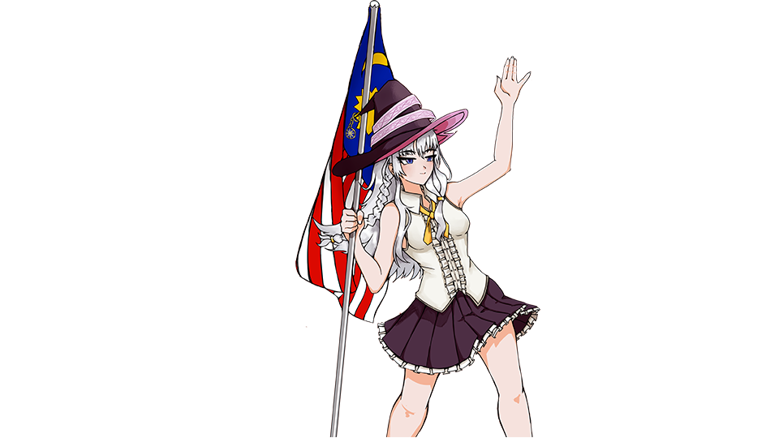
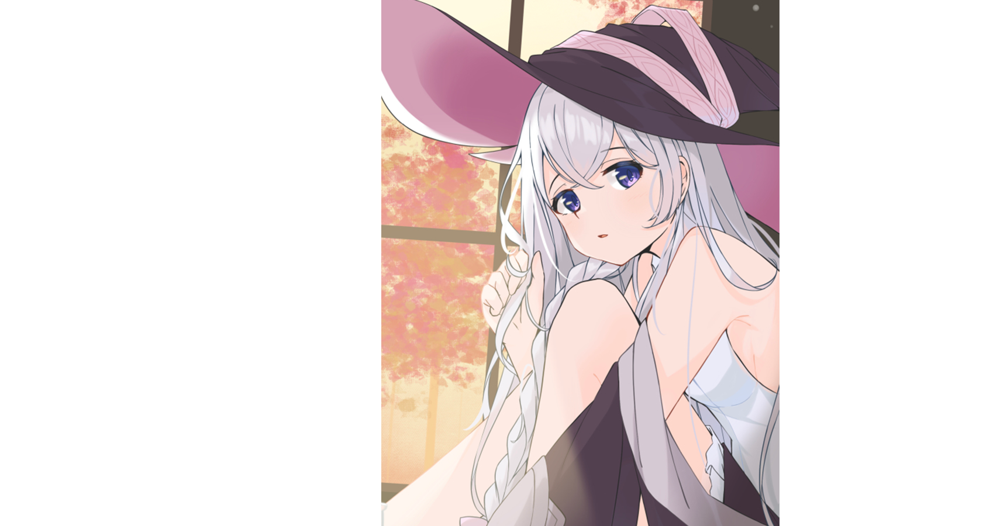
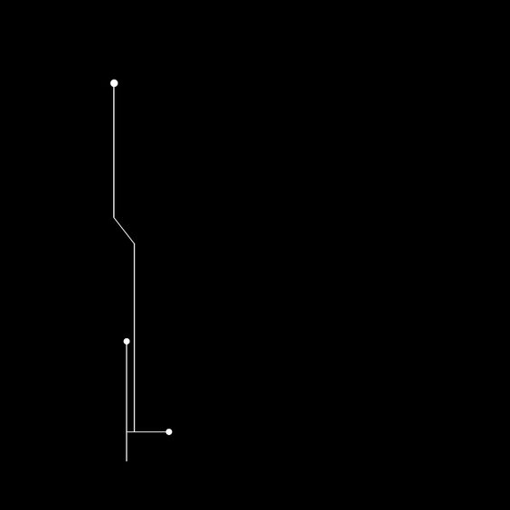

Elaina
-MAJO NO TABITABI-
On her broom, she flies from country to country with her long, black robes adorning the lengths of her arms and trailing behind her with every weave and turn. Her purple-blue eyes peer out from beneath a black tricorn hat to reveal beautiful and silky ashen hair that flows down her back like clouds flowing through summer skies. On her chest is pinned a star-shaped brooch — signifying her status as a witch. Prior to the main story, she was a sheltered child who was greatly proficient in magic, innocent, and "not knowing what failure is."